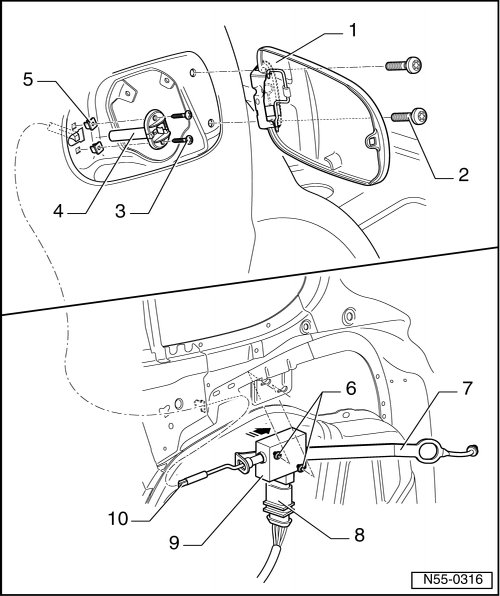

Fuel Filler Door Unit
eFuel Filler Door Unit
Fuel Filler Door Unit Locking and Unlocking Components
Removing

- Open the fuel filler door.
- Remove bolts - 3 - and pull assembly component - 4 - out from tank recess.
- Open the flap for the first-aid kit storage compartment and push the insulating mat aside.
On vehicles with CD changer, remove.
- Disconnect harness connector - 8 - for the Fuel Tank Lid Unlock Motor - 9 -.
- Loosen bolts - 6 - and push fuel filler door unlock motor - 9 - rearward, in - direction of arrow -.
- Remove the fuel filler door unlock motor - 9 - with interior emergency release - 7 - and release rod - 10 -.
Installation
To install, perform the steps used for removal in reverse order.